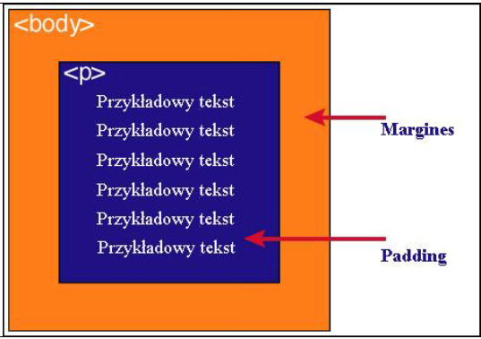

Model pudełkowy to schemat, wg którego określane są wielkości części składowych elementu.
| content | zawartość elementu (np.: tekst, obrazek) |
|---|---|
| padding | otaczające marginesy wewnętrzne, odstęp między obramowaniem i zawartością elementu |
| border | obramowania wokół zawartości elementu, ma styl i kolor. |
| margin | marginesy wokół ramki (margines zewnętrzny). Jest to pusty obszar wokół ramki, który nie ma koloru tła i jest przeźroczysty. |
Uwaga1
Padding, border i margin mogą mieć zerową wartość.
Uwaga2
Tło elementu jest określone dla wszystkich z podanych powyżej obszarów z wyjątkiem marginesów zewnętrznych, które zawsze są przezroczyste (transparent).
Padding określa przestrzeń wokół danego elementu, np: <p> lub <div>, natomiast margines przestrzeń pomiędzy elementami.
Jak widać na rysunku, padding oznaczony jest kolorem niebieskim. Określa on wielkość przestrzeni wokół elementu <p>. Element ten posiada również margines zaznaczony kolorem pomarańczowym. Jest to odległość od brzegu elementu <body>.